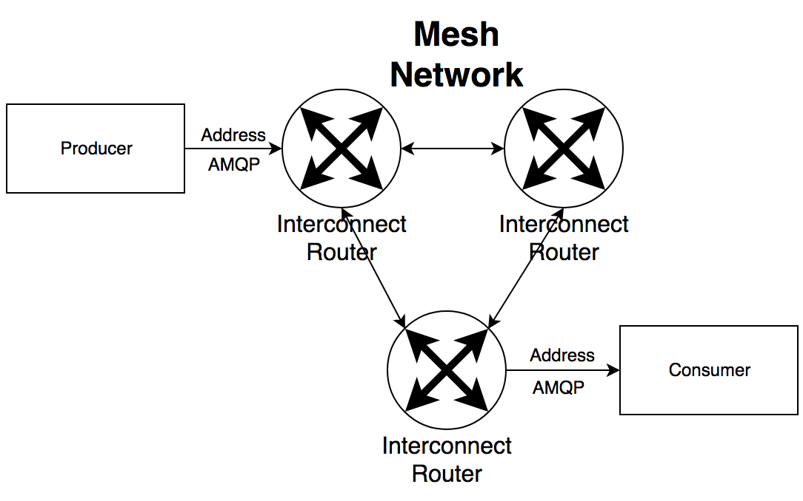

Messaging at Scale
With Open Source
Open Source 101
Chad Cravens
Open Source Systems
https://github.com/ossys/messaging-at-scale
Overview
- Introduction to Messaging
- Message Broker - ActiveMQ Artemis
- Message Router - QPid Dispatch
- Lightweight Messaging - MQTT with Mosca
- Nanoservices - ZeroMQ
- Stream Processing - Apache Kafka
Many Open Source Tools Not Covered
- Akka (Actor Model)
- Ejabberd (XMPP)
- Erlang
- And Many Many Many More...
What is Messaging?
Asking this basic question allows us to challenge how we think about computing and software architecture
A message is a discrete unit of communication intended by the source for consumption by some recipient or group of recipients.
Why Share Information?
- Don't have time (Asynchronous)
- Can't do it (Interfaces / Contracts)
- Failure (Fault Tolerance)
What does it mean to "scale"?
- Adding more compute nodes
- Fault Tolerant
But what else?
- Scaling the team
- Separation of Concerns
- Scope of App
Typical Messaging Architecture

Message Broker - ActiveMQ Artemis
3 Separate 'ActiveMQ' Projects
- ActiveMQ 5
- ActiveMQ Apollo (6)
- ActiveMQ Artemis (Active)
Donation of HornetQ to ApacheHornetQ Core Now
AMQ Artemis Architecture

Scaling AMQ Artemis (Clustering, High Availability)
Message Router - QPid Dispatch
- AMQP support only
- Uses "addresses" to connect consumers/producers
- No persistence
- Blocking (Both producer and consumer must be connected)
- Can "pass through" messages to broker
QPid Dispatch Architecture
Combining with ActiveMQ Artemis
Lightweight Messaging - MQTT
- Message Queuing Telemetry Transport
- Designed for lightweight devices, "IoT"
- Uses a pub/sub pattern
- Very simple API
- Defines 3 QoS (Quality of Service) Levels
- 0 - at most once (fire and forget)
- 1 - at least once (acknowledged delivery)
- 2 - exactly once (assured delivery)
Broker Implementations
Mosquitto
- Written in C
- Lightweight and fast
- Connect clients
- Subscribe / Publish to Topics
Mosca
- Written in Node.JS
- Ability to use MQTT over WebSockets
- Callback Handlers Greatly Enhances Functionality
- Great for Real-Time Mobile / Web
Messaging API - ZeroMQ
- One of my personal favorites!
- Not a broker, but rather an API
- "Sockets on Steroids"
- Extremely Low Latency: 2.8 million messages / sec on 10GbE
- Binding support for dozens of languages (C/C++, NodeJS, R, Scala, Ruby, Java, etc...)
- Great documentation!
void *socket = zmq_socket(context, ZMQ_REP);
zmq_bind(socket, "tcp://server:5555");
zmq_bind(socket, "ipc:///tmp/feeds/0");
zmq_bind(socket, "inproc://endpoint");
Connection Types
- TCP Connection - Over Network
- IPC - Inter-Process Communication
- inproc - Thread Communication
"Multi-Threading Magic" with ZeroMQ
- Pieter Hintjens and Martin Sustrik discuss challenges of shared memory across threads
- Race conditions, critical sections, semaphores, mutexes, lock management, context switches, etc...
- What's the Secret? Share data as messages rather than shared state!
Why I believe this is Powerful...
- Current Dev Ops Capabilities Allow for Ephemeral Environments
- Design threaded apps as "nanoservices", individual compute nodes
- (Almost) seamlessly change between multi-threaded / multi-process / multi-node for distributed computing
ZeroMQ Patterns
Request / Reply

Publish / Subscribe

Push / Pull

Combine Patterns
Quick Note on Protocols with ZeroMQ
- ZeroMQ does not support any specific protocol (binary)
- Developers have the freedom to develop their own
- Suggest looking into protobufs (Google), Thrift (Facebook), Avro (Hadoop / Spark)
Stream Processing - Kafka
- Pub/Sub Fault-Tolerant Messaging System
- Messages are Persisted to Disk
- Built on top of Zookeeper Synchronization Service
- Integrates well with Spark (SMACK Stack)
- Very Efficient and Fast Persistence
- Streaming Library
Thank you!
Chad Cravens
Open Source Systems
chad.cravens@ossys.com
https://github.com/ossys/messaging-at-scale